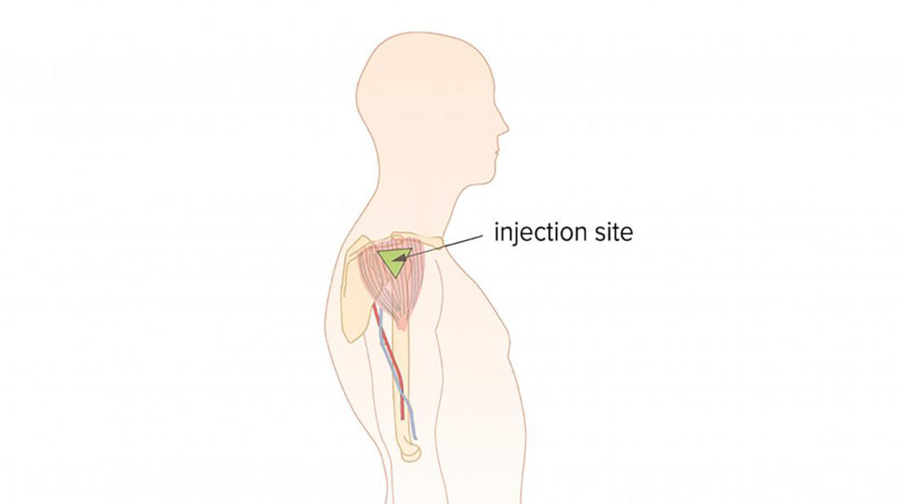
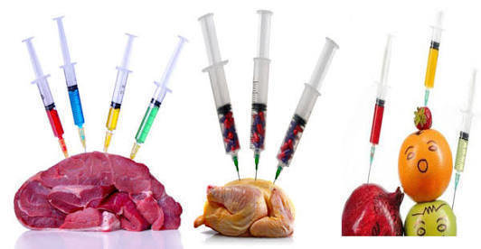

Covid-19 Vaccine 2: Pfizer-BioNTech

General Information
Name: BNT162b2
Manufacturer: Pfizer, Inc., and BioNTech
Type of vaccine: mRNA
Other Information
Number of shots needed: 2 shots with 21 days aparts
How the vaccine is given: Shot in the muscle of upper arm
This vaccine does not include:
- Eggs
- Preservatives 
- Latex
Effectiveness of the vaccine
- Based on evidence from clinical trials, the Pfizer-BioNTech vaccine was 95% effective at preventing laboratory-confirmed COVID-19 illness in people without evidence of previous infection.
- CDC will continue to provide updates as we learn more about how well the Pfizer-BioNTech vaccine works in real-world conditions.
Possible side effects
There are some possible side effects after getting vaccinated, which includes:
- Tiredness
- Headache
- Muscle Pain
- Chills
- Fever
- Nausea
Safety Notes After Vaccination
- In clinical trials, reactogenicity symptoms (side effects that happen within 7 days of getting vaccinated) were common but were mostly mild to moderate.
- Side effects (such as fever, chills, tiredness, and headache) throughout the body were more common after the second dose of the vaccine.
- Most side effects were mild to moderate. However, a small number of people had severe side effects—defined as side effects affecting a person’s ability to do daily activities.
- Although few people in the clinical trials went to the hospital or died, data suggest that people who got the Pfizer-BioNTech vaccine were less likely to have these more serious outcomes compared to people who got the saline placebo.
- CDC will continue to provide updates as we learn more about the safety of the Pfizer-BioNTech vaccine in real-world conditions.
Benefits of getting vaccinated
There are some possible benefits after getting vaccinated, which includes:
- All COVID-19 vaccines currently available in the United States have been shown to be safe and effective at preventing COVID-19.
- All COVID-19 vaccines that are in development are being carefully evaluated in clinical trials and will be authorized or approved only if they make it substantially less likely you will get COVID-19.
- Based on what we know about vaccines for other diseases and early data from clinical trials, experts believe that getting a COVID-19 vaccine also helps keep you from getting seriously ill even if you do get COVID-19.
- Getting vaccinated yourself may also protect people around you, particularly people at increased risk for severe illness from COVID-19.
- After you are fully vaccinated for COVID-19, you may be able to start doing some things that you stopped doing because of the pandemic. For example, you can gather indoors without masks with other people who are fully vaccinated.